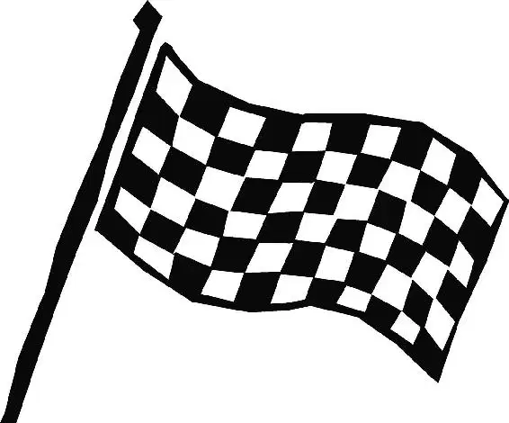

Lightning let his pit crew fit him with a new set of tires while the referees reviewed the instant replay. The rookie wasn’t worried; he was positive he had the race in the bag.
“We’re here in Victory Lane awaiting the race results,” announced a reporter as she thrust a microphone into Lightning’s grill. “Lightning, that was quite a risky move, not taking tires. Are you sorry you don’t have a crew chief?”
Lightning gave her a cocky smile. “No, I’m not,” he replied. “’Cause I’m a one-man show.”
The reporter turned to the camera. “That was a very confident Lightning McQueen, coming to you live from Victory Lane.”
“Yo, Chuck,” Lightning called to one of his pit crew, who struggled to replace the blown tires. “Chuck! What are you doing? You’re blocking the camera. Everyone wants to see the bolt,” he said, referring to his lucky lightning bolt sticker. Suddenly, the jack flew out from underneath Lightning. Ka-thunk! He hit the ground hard.
“Whoa,” he called as the pittie rolled off, “where are you going?”
“I quit, Mr. One-Man Show!” the pittie spatted.
“Oh, oh, okay, leave!” Lightning grinned at the camera. “Fine!” He snorted and added sarcastically, “How will I ever find anyone else who knows how to fill me up with gas? Adios, Chuck!”
“And my name’s not Chuck!” the pittie hollered.
“Whatever,” Lightning scoffed. Plenty of pit crews had quit on him before, but Lightning McQueen didn’t care. He knew that when it came to racing, he was the only one who mattered.
“Hey, Lightning,” Chick called as he rolled up to his rival. “Yo, Lightning. Seriously, that was some pretty darn nice racing out there … by me.”
“Good one!” his pit crew said, cracking up at the lame joke. “Oh, yeah! Zinger!”
“Welcome to the Chick era, baby,” Chick went on, his voice glossy with confidence. “The Piston Cup, it’s mine, dude, it’s mine. Hey, fellas, how do you think I’d look in Dinoco blue?”
“Blue’s your color,” one of the pitties piped up.
“In your dreams,” Lightning replied, “thunder.”
“Yeah, right, thunder,” Chick said, turning to his pit crew. “What’s he talking about, ‘thunder’?”
“Hey, you know,” Lightning shot back, “because thunder always comes after lightning! Ka-pow!” Lightning flashed his shiny lightning bolt sticker at the crowd again, and the reporters went wild. They squeezed in around him, angling for a photo of the famous race car. “Lightning, over here!” “This way, Lightning!” “Hey, Lightning, we want to see the bolt!”
“Ka-ching!” Lightning said with each new pose for the cameras. “Ch-ch-chkow!”
Chick turned to his pit crew as the reporters elbowed him and his crew out of the way. “Who here knew about the thunder thing?” he demanded.
The King stood nearby, surrounded by his loyal Dinoco pit crew.
“You sure made Dinoco proud, King,” said Dinoco’s owner, Tex, to the longtime champion.
“My pleasure, Tex,” The King replied.
The King’s wife snuggled against his fender. “Whatever happens,” she said gently, “you’re a winner to me, you ol’ daddy rabbit.”
“Thanks, dear,” the veteran said lovingly. “Wouldn’t be nothin’ without you.” Then he rolled over to Lightning, who was surrounded by adoring fans. The King knew that Lightning was arrogant, but he respected Lightning’s talent. He wanted to help the kid.
“Hey, buddy,” The King said once the reporters had cleared away, “you’re one gutsy racer. You got more talent in one lug nut than a lotta cars got in their whole body… ”
“Really?” Lightning felt flush with pride. The King sure knows quality racing when he sees it, the rookie thought. “Oh, that, that’s—”
“But you’re stupid,” The King finished.
Lightning blinked. “Excuse me?”
“This ain’t a one-man deal, kid,” The King said. “You need to wise up and get yourself a good crew chief and a good team. You ain’t gonna win unless you got good folks behind you and you let them do their job like they should. It’s like I tell the boys at the shop: it’s about everybody comin’ together and doin’ the best they can.”
“Uh, yeah, that is spectacular advice,” Lightning said absently. He wasn’t really paying attention to what The King was saying. He was too busy picturing himself as the next Dinoco car, his face on the cover of magazines, his signature on the side of the company helicopter, fame, fortune, and more Piston Cups than he could fit into his enormous mansion. And it was all starting right there, right then, with that win. “Thank you, Mr. The King.”
Just then, music sounded over the PA system. “Ladies and gentlemen,” Bob announced, “for the first time in Piston Cup history …”
“… a rookie has won the Piston Cup!” Lightning shouted. “Yes!” Revving his engine, he drove forward, bursting through the victory banner. He struck his finish line pose, mugging for the crowd.
“… we have a three-way tie!” Bob finished.
Confetti cannons burst, showering bits of paper through the air like snowflakes. The King and Chick drove forward to join Lightning.
“Oh, boy!” Chick said as he cracked up. “Hey, Lightning,” he taunted, “that must be really embarrassing!”
Lightning scowled.
“Piston Cup officials have determined that a tiebreaker race between the three leaders will be held in California in one week,” Bob announced. Lightning was shocked. He couldn’t believe that he hadn’t won!
“Hey, rookie,” Chick whispered to Lightning, “first one to California gets Dinoco all to himself!”
Lightning slunk away, dejected. “ ‘First one to California gets Dinoco all to himself,’ ” he muttered. “Oh, we’ll see who gets there first, Chick.”
